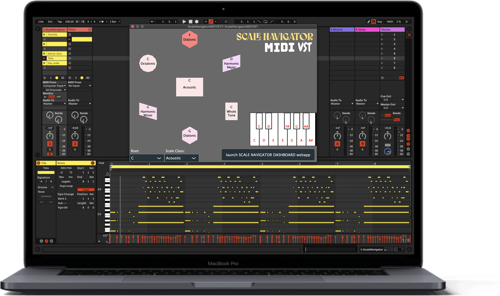
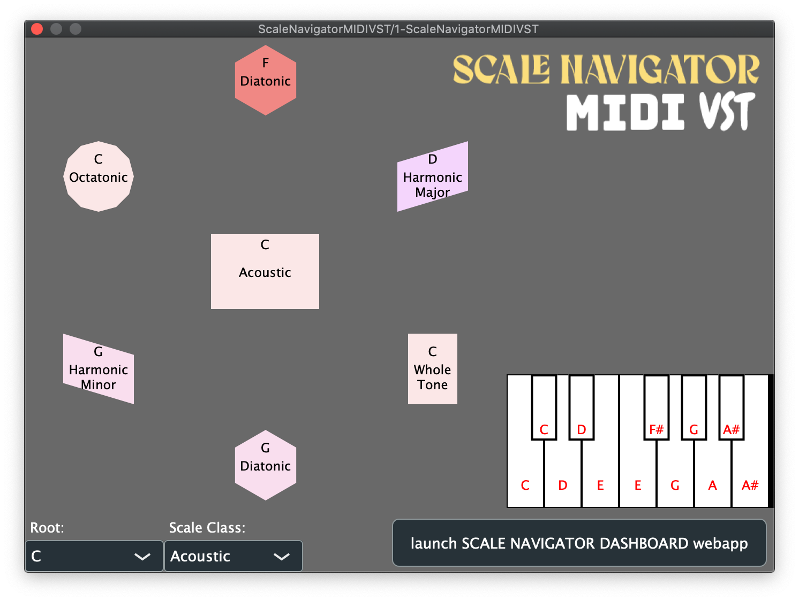

Scale Navigator
Dashboard

MUSICAL SANDBOX


Guitar
Mandolin
Ukulele
Banjo
Piano
Staff Notation
Flute

Scale Navigator
MIDI
VST
MUSICAL SANDBOX
Navigate the hyperdimenstional crystilline lattice superstructure that is the scale network.
IMPROVISE ON ANY INSTRUMENT
Select an instrument to make music with:
PLAY CHORDS
Chords suggest new scales, scales suggest new chords. Generate complex jazz chords based on the scale you're in. Pivot modulate to exciting new scales based on the chord you just played.
JAM WITH YOUR FRIENDS IN ENSEMBLES, REMOTE OR IN-PERSON
Create and join Ensembles to harmonically synchronize with your bandmates, remotely or in-person.
NEVER PLAY A WRONG NOTE
Drop the free Scale Navigator MIDI VST into your DAW to filter / manipulate MIDI, and only ever let the right notes through.
